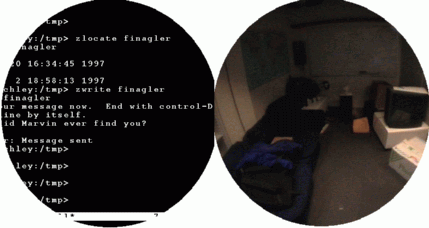
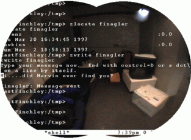

Private Eye
The vibrating-mirror monocular display that launched wearable computing and became the Nintendo Virtual Boy

Overview
The Private Eye was a monochrome (red) head-mounted display introduced in 1989 by Reflection Technology, founded by MIT dropout Allen Becker. Unlike any display before or since, it generated an image using a vertical column of 280 red LEDs projected through a magnifying lens onto a voice-coil-driven vibrating mirror. The mirror swept the LED column horizontally at 50–100 Hz while LEDs pulsed at precise moments, relying on persistence of vision to fuse the scan into a stable 720×280 pixel raster. Weighing just 2.5 ounces, it consumed only 0.5 watts and cost $795 for the display unit ($2,000 with developer kit).
The device covered only one eye. Because the human visual system fuses binocular input, text and graphics from the Private Eye appeared to float superimposed over the user's normal vision through the uncovered eye — a see-through augmented reality effect achieved without optical combiners. This was discovered serendipitously and became a defining feature.
The Private Eye became the enabling display for virtually every early wearable computing project: Thad Starner's "Tin Lizzy" at MIT, CMU's VuMan for blueprint browsing, Columbia's KARMA augmented-reality maintenance system, and Doug Platt's Hip-PC. Starner wore a Private Eye-based wearable daily from 1993 and later became a technical lead on Google Glass, explicitly citing his Private Eye experience. Nintendo purchased exclusive rights to the display technology and used two Private Eye displays to create the Virtual Boy (1995). The Virtual Boy's commercial failure led directly to Reflection Technology's closure in 1996.
Deep dive
Allen Becker dropped out of MIT and worked at Kurzweil Computer Products (Ray Kurzweil's reading machine company) before founding Reflection Technology in 1986. The core insight was that a mechanically scanned LED array could produce a viable raster display in an extremely compact package. Co-inventors Ben Wells and Nate Goldschlag contributed to the design. US Patent 4,934,773 ("Miniature video display system") was filed July 27, 1987 and granted June 19, 1990.
A vertical column of 280 red LEDs shines through a magnifying lens onto a mirror mounted on a voice-coil actuator. The mirror oscillates horizontally, sweeping the column of light across the user's field of view. By pulsing individual LEDs at precise moments during each sweep, the system draws successive columns of pixels onto the retina. Persistence of vision fuses these into a stable 720×280 bitmap image appearing as a virtual 15-inch display at 18 inches (22-degree field of view). The entire optical assembly fits in a light-tight box measuring 3.2 × 1.2 × 1.1 inches.
The Private Eye was designed to be monocular — covering only one eye. Users discovered that the brain automatically fuses the display image with the real-world view from the uncovered eye, creating the illusion of a transparent screen floating in space. This required no beam splitters, no optical combiners — just human neurophysiology. MIT researchers documented this effect extensively, and it became the basis for the "glance-at" interaction model: information was available with a quick glance upward while maintaining eye contact and situational awareness.
Before the Private Eye, head-mounted displays were heavy, power-hungry, and expensive (e.g., the VPL EyePhone at $250,000/system). The Private Eye's 2.5-ounce weight, 0.5-watt draw, and $795 price made all-day wearable computing practical. MIT's Thad Starner built his "Tin Lizzy" system around the Private Eye paired with a Twiddler chording keyboard — one hand for input, one eye for output. He wore this daily from 1993 through the late 1990s, typing 60 wpm while walking. CMU's VuMan 1 (1991) used the Private Eye for browsing blueprints hands-free. Columbia's KARMA system (1993) overlaid maintenance instructions onto real equipment via the Private Eye.
Nintendo purchased exclusive rights to the Private Eye display technology for an estimated $5 million, becoming the first-ever minority investor in a US company for Reflection Technology. The Virtual Boy (1995) used two Private Eye displays to create stereoscopic 3D. It was a commercial failure — only ~800,000 units sold, discontinued within a year — and Reflection Technology closed in September 1996 as a direct result.
Thad Starner, who wore a Private Eye daily for years, was hired by Google in 2010 as a technical lead on Project Glass. He has explicitly stated that Google Glass is a continuation of his Private Eye work. The Private Eye also established the "pocket computer + private head-worn display" paradigm that would later inform smartphones, smart glasses, and modern AR headsets like HoloLens and Apple Vision Pro. The device is held in the permanent collection of the Deutsches Museum in Munich.
Team & pioneers
- Allen "Al" Becker. Founder of Reflection Technology, MIT dropout, former Kurzweil engineer.
- Ben Wells. Co-inventor, contributed to optical and mechanical design.
- Nate Goldschlag. Co-inventor.
- Thad Starner. MIT wearable computing pioneer who wore Private Eye daily from 1993; later Google Glass technical lead.
Media


Sources
- Kill Screen — "Seeing Red" (definitive Private Eye history: Becker, Nintendo deal, Virtual Boy)
- Deutsches Museum — Private Eye entry (Google Arts & Culture)
- MIT Media Lab — Wearable Computing Timeline
- MIT — Building a head mount for the Private Eye (fusion effect documentation)
- Event Horizons — P4 Documents Archive (full scanned developer docs, schematics)
- US Patent 4,934,773 — Miniature video display system (Becker)
- Bill Buxton — Private Eye Brochure PDF (original sales brochure)
- MIT Technology Review — Starner on Google Glass (Private Eye → Glass lineage)
- Becker, A. (1990) — Design Case Study: Private Eye. Information Display journal
- Stories by Williams — Digital Eyewear Through the Ages